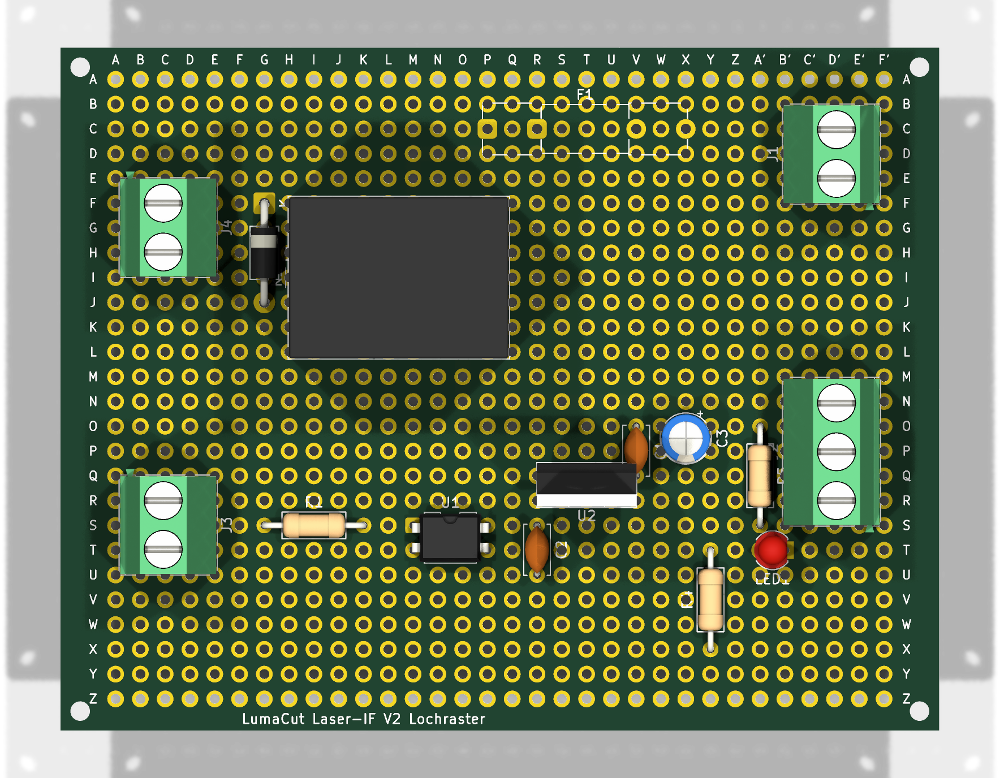
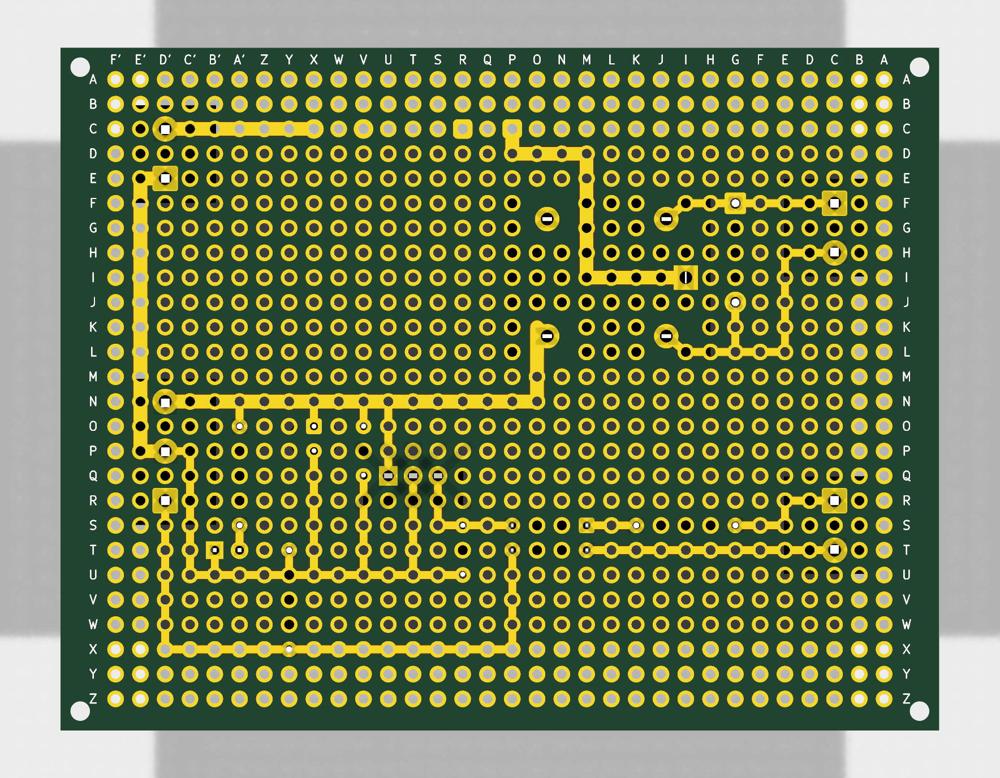

Koordinate = Spalte + Zeile, z. B. GS = Spalte G, Zeile S. Rechts kommen die Spalten A–F ein zweites Mal: hier A'–F' geschrieben. Gelbe Linien = Draht auf der Lötseite.


| Teil | Wert | Löcher |
|---|---|---|
| J4 Klemme | SKR FAN1 (Spule) | + CF, − CH |
| J3 Klemme | SKR BL_Touch | PA1 CR, GND CT |
| J1 Klemme | Netzteil | +24 V D'C, GND D'E |
| J2 Klemme | Laser | rot D'N, schwarz D'P, gelb D'R |
| F1 | Sicherung 5×20, 2 A träge | Clip 1: PC + RC, Clip 2: VC + XC |
| K1 | Relais G5LE-1 24 VDC | COM in II; Pins 2–5 neben dem Raster → bohren |
| D1 | 1N4007 | Ring (Kathode) GF, Anode GJ |
| R1 | 680 Ω (PC817: 470 Ω) | GS – KS |
| U1 | SFH618A-3 / PC817 | Pin 1 (Punkt) MS, 2 MT, 3 PT, 4 PS |
| U2 | 7805 | OUT SQ, GND TQ, IN UQ (Metallfahne nach unten) |
| C1 | 100 nF | VO – VQ |
| C3 | 10 µF 35 V | + XO, − XP |
| C2 | 100 nF | RS – RU |
| R4 | 2,2 kΩ | YT – YX |
| R5 | 4,7 kΩ | A'O – A'S |
| LED1 | LED 3 mm | Anode (langes Bein) A'T, Kathode B'T |
| Signal | Weg |
|---|---|
| +24 V Netzteil | XC → D'C (dick) |
| Sicherung → COM | PC → PD → MD → MI → K1-COM (dick, isoliert) |
| +24 V geschaltet | K1-NO → OK → ON → D'N (dick) |
| GND Netzteil → Laser | D'E → E'E → E'P → D'P (dick) |
| GND-Schiene | D'P → C'P → C'U → RU |
| +24 V Abzweige | UN → UQ · VN → VO · XN → XO · A'N → A'O |
| GND Abzweige | TQ → TU · VQ → VU · XP → XU · YT → YU · B'T → B'U |
| LED | A'S → A'T |
| +5 V | SQ → SS → PS |
| PWM | PT → PX → D'X → D'R |
| Spule + | CF → IF → K1-Pin 5 |
| Spule − | CH → EH → EL → IL → K1-Pin 2 · GJ → GL |
| PA1 | CR → ER → ES → GS |
| LED Optokoppler | KS → MS |
| SKR-GND | CT → MT |